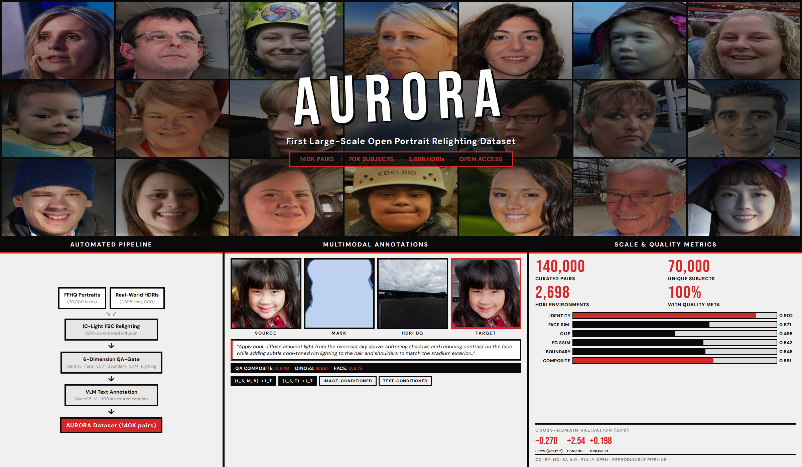
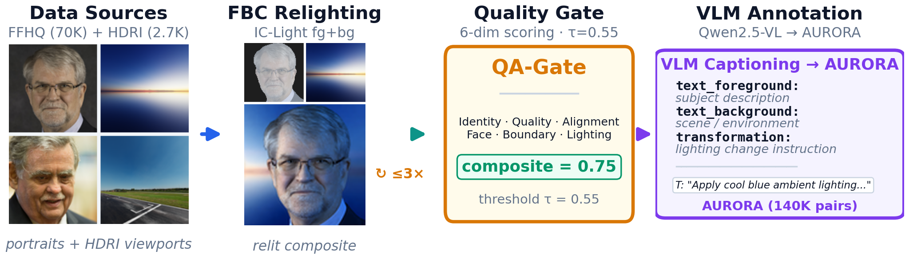
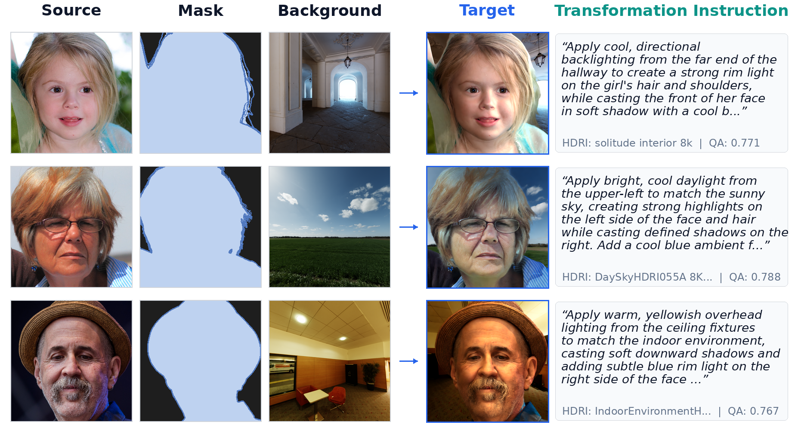
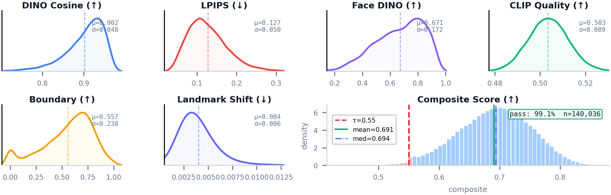
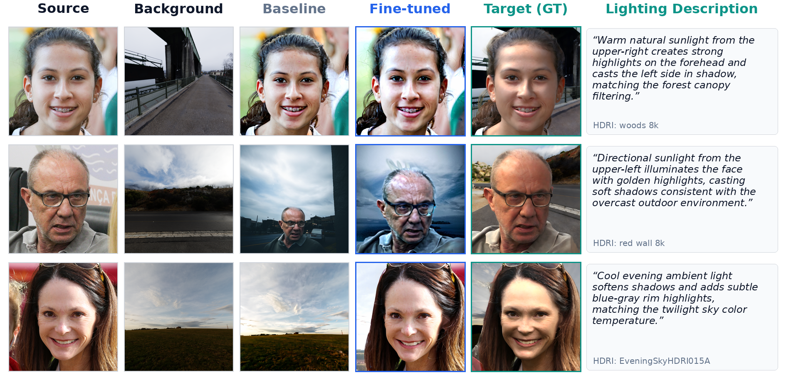

with AnyLight HDRI-Grounded Synthesis and Multimodal Annotations

LITORA (Lighting-grounded Image/Text Open Relighting Assets) is the first large-scale, openly-available portrait relighting dataset. It cross-mixes 70K FFHQ portraits with 2,698 real-world CC0 HDRI environment maps, offering over two orders of magnitude more subject diversity than any existing open portrait relighting dataset.

SH lighting extraction, dominant light detection, LDR background viewports via perspective sampling with ACES tone mapping.
IC-Light (SD v1.5) foreground-background compositing with classifier-free guidance and two-phase denoising.
Six-dimensional quality scoring with composite threshold (τ=0.55) and retry mechanism. 98.6% first-attempt pass rate.
Qwen2.5-VL generates per-sample transformation instructions bridging image and text conditioning.

Each sample contains: source portrait (Is), foreground mask (M), HDRI background viewport (B), relit target (It), VLM transformation instruction (T), and per-dimension quality scores (Q).

Per-dimension KDE plots for six quality axes. Dashed line marks the default gate threshold τ=0.55. All scores are released with every sample to enable custom downstream filtering.

| Metric | Baseline | Fine-tuned | Δ |
|---|---|---|---|
| PSNR ↑ | 8.81 | 11.35 | +2.54 dB |
| SSIM ↑ | 0.255 | 0.379 | +0.124 |
| LPIPS ↓ | 0.706 | 0.436 | −0.270 |
| Metric | Baseline | Fine-tuned | Δ |
|---|---|---|---|
| DINOv3 (CelebA-HQ) | 0.590 | 0.788 | +0.198 |
| DINOv3 (DPR) | 0.574 | 0.775 | +0.201 |
| Dataset | Year | Subjects | Pairs | Res. | Text | Open |
|---|---|---|---|---|---|---|
| Multi-PIE | 2010 | 438 | 750K | 640×480 | ✗ | ✓ |
| DPR | 2019 | ~100 | 5K | 256² | ✗ | ✗† |
| SfSNet | 2018 | Synth. | 20K | 256² | ✗ | ✓ |
| Total Relighting | 2021 | ~70 | — | 1024² | ✗ | ✗ |
| POLAR | 2025 | 200+ | 28.8M* | 4K | ✗ | Pending |
| LITORA (Ours) | 2026 | 70K | 140K | 1024² | ✓ | ✓ |
† Pre-rendered pairs not downloadable; BIP2017 lighting data no longer available.
* OLAT captures (subject × lighting × view × expression), not source→target pairs.